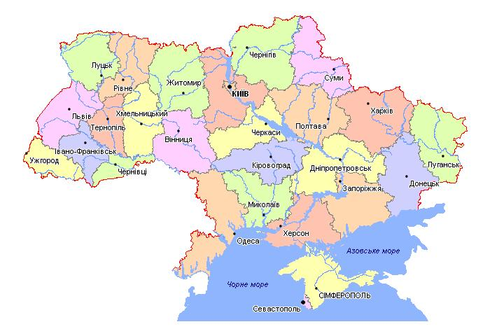

Україна

Україна — країна у Східній Європі. Це друга за величиною країна в Європі після Росії, яка межує з нею на сході та північному сході. Україна також межує з Білоруссю на півночі; Польщею та Словаччиною на заході; Угорщиною, Румунією та Молдовою на південному заході; а також Чорним та Азовським морями на півдні та південному сході. Київ — столиця та найбільше місто країни, за ним йдуть Харків, Одеса та Дніпро. Офіційною мовою України є українська.
Люди населяють Україну з 32 000 років до нашої ери. У Середньовіччі вона була місцем ранньої слов'янської експансії, а пізніше стала ключовим центром східнослов'янської культури за часів держави Київська Русь, яка виникла у IX столітті. Київська Русь стала найбільшою та наймогутнішою державою в Європі у X та XI століттях, але поступово розпалася на ворогуючі регіональні держави, перш ніж бути знищеною монголами у XIII столітті. Протягом наступних 600 років ця територія була предметом суперечок, розділу та керувалася різноманітними зовнішніми державами, включаючи Велике князівство Литовське, Польське королівство, Річ Посполиту, Австрійську імперію, Османську імперію та Російське царство.
Козацький Гетьманат виник у центральній Україні у 17 столітті, але був розділений між Росією та Польщею, перш ніж поглинутий Російською імперією наприкінці 19 століття. Розвинувся український націоналізм, і після Російської революції 1917 року була утворена недовговічна Українська Народна Республіка. Більшовики закріпили контроль над більшою частиною колишньої імперії та створили Українську Радянську Соціалістичну Республіку, яка стала складовою республікою Радянського Союзу у 1922 році. На початку 1930-х років мільйони українців загинули під час Голодомору, штучного голоду. Під час Другої світової війни Україна була окупована Німеччиною та зазнала великих битв та звірств, в результаті яких загинуло 7 мільйонів мирних жителів, включаючи більшість українських євреїв.
Україна здобула незалежність у 1991 році, коли Радянський Союз розпався, оголосивши себе нейтралітетом. Нова конституція була прийнята в 1996 році, коли країна переходила до вільного ринку та ліберальної демократії на тлі ендемічної корупції та спадщини державного контролю. Помаранчева революція 2004–2005 років започаткувала виборчі та конституційні реформи. Відродження політичних криз спровокувало серію масових демонстрацій у 2014 році, відомих як Євромайдан, що призвело до революції, в кінці якої Росія односторонньо окупувала та анексувала Кримський півострів України, а проросійські заворушення завершилися війною на Донбасі з підтримуваними Росією сепаратистами та Росією. Росія розпочала повномасштабне вторгнення в Україну у 2022 році.
Україна є унітарною державою, а її система правління є напівпрезидентською республікою. Україна має перехідну економіку та має найнижчий номінальний ВВП на душу населення в Європі станом на 2024 рік, при цьому корупція є значною проблемою. Завдяки своїм великим родючим землям країна є важливим експортером зерна, хоча виробництво зерна скоротилося з 2022 року через російське вторгнення, що ставить під загрозу глобальну продовольчу безпеку. Україна вважається середньою державою у світових справах. Її армія є шостою за величиною у світі з восьмим за величиною оборонним бюджетом, а також експлуатує один з найбільших і найрізноманітніших парків безпілотників у світі. Україна є членом-засновником Організації Об'єднаних Націй та членом Ради Європи, Світової організації торгівлі та ОБСЄ. Вона перебуває в процесі вступу до Європейського Союзу та подала заявку на вступ до НАТО у 2022 році.
Історія
Створення держави Київська Русь залишається неясним і невизначеним. Держава включала значну частину сучасної України, Білорусі та західної частини Європейської Росії. Згідно з «Повістю Повості», русичі спочатку складалися з варягів зі Скандинавії. У 882 році язичницький князь Олег (Олег) завоював Київ у Аскольда та Діра та проголосив його новою столицею Русі. Однак історики - антинорманісти стверджують, що східнослов'янські племена вздовж південних частин Дніпра вже перебували в процесі самостійного формування держави. Варязька еліта, включаючи правлячу династію Рюриковичів , пізніше асимілювалася зі слов'янським населенням. Київська Русь складалася з кількох князівств, якими правили взаємопов'язані князі Рюриковичі, які часто воювали один з одним за володіння Києвом.
Географія
Україна є другою за величиною європейською країною після Росії та найбільшою країною, що повністю розташована в Європі. Розташована між 44° та 53° північної широти та 22° та 41° східної довготи, вона здебільшого знаходиться на Східноєвропейській рівнині. Україна займає площу 603 550 квадратних кілометрів (233 030 квадратних миль) з береговою лінією 2782 кілометри (1729 миль).
Ландшафт України складається переважно з родючих степів (рівнин з невеликою кількістю дерев) та плоскогір'їв, які перетинають такі річки, як Дніпро, Сіверський Донець, Дністер та Південний Буг, що впадають на південь у Чорне море та менше Азовське море . На південному заході дельта Дунаю утворює кордон з Румунією. Регіони України мають різноманітні географічні особливості, починаючи від високогір'я і закінчуючи низовинами. Єдиними горами країни є Карпати на заході, найвища з яких — Говерла заввишки 2061 метр (6762 фути), та Кримські гори на крайньому півдні вздовж узбережжя.
В Україні також є низка високогірних регіонів, таких як Волино-Подільська височина (на заході) та Придніпровська височина (на правому березі Дніпра). На сході розташовані південно-західні відроги Середньоруської височини, якими проходить кордон з Росією. Біля Азовського моря розташовані Донецький кряж та Приазовська височина. Танення снігу з гір живить річки та їхні водоспади.
Значні природні ресурси України включають літій, природний газ, каолін, деревину та велику кількість орних земель. Україна має багато екологічних проблем. У деяких регіонах бракує достатньої кількості питної води. Забруднення повітря та води впливає на країну, а також вирубка лісів та радіаційне забруднення на північному сході внаслідок аварії 1986 року на Чорнобильській атомній електростанції. Шкода для навколишнього середовища, спричинена російським вторгненням в Україну, була описана як екоцид, руйнування Каховської греблі, сильне забруднення та мільйони тонн забрудненого сміття оцінюються в понад 50 мільярдів доларів США на ремонт.
Політика
Україна — республіка з напівпрезидентською системою правління з окремими законодавчою, виконавчою та судовою гілками влади.
Економіка
У 2021 році сільське господарство було найбільшим сектором економіки. Україна є одним з найбільших експортерів пшениці у світі. Вона залишається однією з найбідніших країн Європи з найнижчим номінальним ВВП на душу населення. Незважаючи на покращення, як і в Молдові, корупція в Україні залишається перешкодою для вступу до ЄС; країна посіла 104-те місце зі 180 в Індексі сприйняття корупції за 2023 рік. У 2021 році ВВП України на душу населення за паритетом купівельної спроможності становив трохи більше 14 000 доларів. Незважаючи на надання екстреної фінансової підтримки, МВФ очікував, що економіка значно скоротиться на 35% у 2022 році через вторгнення Росії. Одна з оцінок 2022 року полягала в тому, що витрати на післявоєнну відбудову можуть сягнути півтрильйона доларів.
Демографічні показники

До вторгнення Росії в Україну у 2022 році населення країни оцінювалося в понад 41 мільйон осіб, і вона була восьмою за чисельністю населення країною в Європі. Це сильно урбанізована країна, а її промислові регіони на сході та південному сході є найбільш густонаселеними — близько 67% від загальної чисельності населення проживає в міських районах. На той час щільність населення в Україні становила 69,5 мешканців на квадратний кілометр (180 мешканців/кв. милю), а загальна тривалість життя в країні при народженні становила 73 роки (68 років для чоловіків та 77,8 років для жінок).
Після розпаду Радянського Союзу населення України досягло піку приблизно в 52 мільйони у 1993 році. Однак через перевищення смертності над народжуваністю, масову еміграцію, погані умови життя та низьку якість охорони здоров'я, загальна чисельність населення зменшилася на 6,6 мільйона, або на 12,8% порівняно з тим самим роком, що склало 2014 рік.
Згідно з переписом населення 2001 року, етнічні українці становили приблизно 78% населення, тоді як росіяни були найбільшою меншиною, близько 17,3% населення. До невеликих меншин належали: білоруси (0,6%), молдавани (0,5%), кримські татари (0,5%), болгари (0,4%), угорці (0,3%), румуни (0,3%), поляки (0,3%), євреї (0,3%), вірмени (0,2%), греки (0,2%) та татари (0,2%). Також було підраховано, що в Україні проживало близько 10–40 000 корейців, які проживали переважно на півдні країни та належали до історичної групи Корьо-сарам, а також близько 47 600 ромів (хоча Рада Європи оцінює їхню кількість у близько 260 000).
За межами колишнього Радянського Союзу найбільшим джерелом іммігрантів у період після здобуття Україною незалежності були чотири азійські країни, а саме Китай, Індія, Пакистан та Афганістан. Наприкінці 2010-х років 1,4 мільйона українців були внутрішньо переміщеними через війну на Донбасі, а на початку 2022 року понад 4,1 мільйона втекли з країни після вторгнення Росії в Україну у 2022 році, що спричинило кризу біженців в Україні. Більшості чоловіків-громадян України віком від 18 до 60 років було відмовлено у виїзді з України. За оцінками уряду України, населення регіонів, контрольованих Україною, у 2024 році становило від 25 до 27 мільйонів.
Культура
Українські звичаї значною мірою зазнали впливу православ'я, домінуючої релігії в країні. Гендерні ролі також, як правило, більш традиційні, а бабусі та дідусі відіграють більшу роль у вихованні дітей, ніж на Заході. На культуру України також вплинули її східні та західні сусіди, що відображено в її архітектурі, музиці та мистецтві.
Комуністична епоха мала досить сильний вплив на мистецтво та письменство України. У 1932 році Сталін зробив соціалістичний реалізм державною політикою в Радянському Союзі, опублікувавши декрет «Про реконструкцію літературних і художніх організацій». Це значно придушило творчість. Протягом 1980-х років було запроваджено гласність (відкритість), і радянські митці та письменники знову отримали свободу висловлюватися так, як вони хотіли.
Станом на 2023 рік ЮНЕСКО внесла 8 об'єктів в Україні до Списку всесвітньої спадщини . Україна також відома своїми декоративними та народними традиціями, такими як петриківський розпис , косівська кераміка та козацькі пісні. У період з лютого 2022 року по березень 2023 року ЮНЕСКО підтвердила пошкодження 247 об'єктів, включаючи 107 релігійних пам'яток , 89 будівель, що мають мистецьке або історичне значення, 19 пам'ятників та 12 бібліотек. З січня 2023 року історичний центр Одеси внесено до Списку всесвітньої спадщини, що перебуває під загрозою.
Традиція писанки має давнє коріння в Україні. На ці яйця малювали воском, створюючи візерунок; потім наносили барвник, щоб надати яйцям приємних кольорів, барвник не впливав на частини яйця, попередньо покриті воском. Після того, як яйце було пофарбоване, віск видаляли, залишаючи лише барвистий візерунок. Ця традиція має тисячі років і передує приходу християнства в Україну. У місті Коломия, біля підніжжя Карпатських гір , у 2000 році було збудовано музей писанки, який у 2007 році був номінований на пам'ятку сучасної України в рамках акції «Сім чудес України».
З 2012 року Міністерство культури України формує Національний реєстр елементів нематеріальної культурної спадщини України, який станом на вересень 2025 року складається зі 115 елементів.